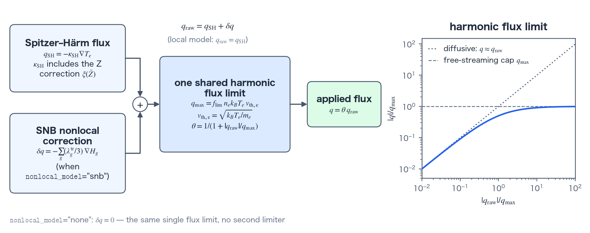

Local Spitzer–Härm model and flux limiting
The local model of electron heat conduction consists of the Spitzer–Härm (SH) conductivity, which always includes the Z-dependent γ0 correction, and a harmonic flux limiter. This page defines the conductivity, the flux limiter, and how the limiter is applied in 1D and 2D RZ. The physical mechanism is on the overview page, and the nonlocal correction is on the SNB page.
Conductivity and flux-limiter equations
Electron conductivity is evaluated in the cgs + eV unit system. The mean ionization \(\bar Z\) comes from the material model. Because Coulomb collision rates are governed by the mean of the charge squared, materials that provide the charge-moment ratio \(r_2=\langle Z^2\rangle/\bar Z^2\) replace \(\bar Z\) with the collisional effective charge \(\bar Z r_2\). The tables that give \(r_2\) are read in 1D_SPH only, so 2D RZ electron conduction keeps \(\bar Z\) (see EOS, opacity & ionization). The conductivity is:
$$ \kappa_{SH}=\kappa_0\,\xi(\bar Z)\, \frac{T_e^{5/2}}{\bar Z\ln\Lambda},\qquad \xi(Z)=\frac{(Z+0.24)/(Z+4.2)}{(1+0.24)/(1+4.2)}, $$ $$ \kappa_0=3.06\times10^9 \;\mathrm{erg/(cm\,s\,eV^{7/2})},\qquad \mathbf q_{SH}=-\kappa_{SH}\nabla T_e. $$Here \(\kappa_0\) is the Spitzer prefactor in cgs + eV units, \(\xi(\bar Z)\) is the Z-dependent correction detailed in the list below, \(\ln\Lambda\) is the Coulomb logarithm, and \(\mathbf q_{SH}\) is the resulting unlimited heat flux.
In 1D the flux limit is applied per face. The face electron density and temperature — each the arithmetic average of the adjacent cells — and the thermal speed at that temperature build \(q_{max}\), and the harmonic composition described in the mechanism section caps the flux (\(k_B\) is the eV→erg conversion constant eV_to_erg, as everywhere in the cgs + eV system):
In 2D RZ the flux limit is applied per cell. The cell's electron density and temperature give \(q_{max}\), the cell's temperature-gradient magnitude \(|\nabla T_e|\) (the mean of the gradient magnitudes at the cell's nodes) gives \(q_{raw}=\kappa_{SH}|\nabla T_e|\), and the effective cell conductivity is \(\kappa_{eff}=\theta\kappa_{SH}\).
- \(\xi(Z)\). γ0(Z) is the dimensionless electron heat-conduction coefficient of Braginskii transport theory (the prefactor of the Spitzer-type conductivity; 3.16 at Z=1), and ξ(Z) is the Epperlein–Short fit of its Z dependence, normalized so that ξ(1)=1, with ξ(∞)=4.19. The Z=1 component (3.16) is already folded into κ0. The correction applies in 1D, 2D, the per-material conservation mode, and the SH base flux used by SNB; no setting turns it off.
- \(q_{max}\) and \(\theta\). \(q_{max}=f_{lim}n_ek_BT_ev_{th,e}\) sets the free-streaming fraction and θ provides harmonic interpolation. The local path uses \(q_{raw}=q_{SH}\), whereas SNB uses \(q_{raw}=q_{SH}+\delta q\); SH and SH+δq pass through one shared flux limiter, never a second one (Figure A).
- Face-κ policy. In 1D, the rule that builds a face κ from the two adjacent cell values is set by
face_kappa_policy(default: the Kirchhoff secant,kirchhoff_same_material). The terms section gives the definition and the formula, and the face-conductivity section the usage. The limiter's SH estimate and the applied flux always use the same face κ. - Voids.
cell_is_voidforces κeff=0, forming an adiabatic boundary and preventing floor-density exterior cells from collapsing the explicit stability limit Δtexp. SNB gives voids an identity row and zeroes adjacent group diffusivities. - SNB groups. In the temperature-normalized electron energy β̂=E/(kB max Te), the lowest group is [0, 0.1], and the group edges above it form a geometric progression from 0.1 to
snb_E_max_over_Te(23 geometric intervals for the default 24 groups; Figure B). The weights ξg=P(βg)−P(βg−1) are formed as exact differences of the antiderivative P. The two mean-free-path variants are the defaultgeometric_r2and the original Schurtz form. The definitions of groups and weights are in the terms section. - iSNB Picard. The Cao 2015 coupling fixes (θ, δq), repeats the STS superstep from \(T_e^n\), and recomputes the correction. It performs at least two iterations and uses a flux max-norm relative tolerance; at convergence the amplification factor lies in (0,1) for every Δt, giving unconditional stability. The iteration is defined in the terms section.

nonlocal_model="none", δq=0 and the path reduces to the limited SH flux of the local model. Right: the response of the limit, |q|/qmax=x/(1+x) with x=|qraw|/qmax (solid blue). The dotted line is the diffusive limit q≈qraw and the dashed line is the free-streaming cap qmax; the solid curve lies below both for every x.Namelist controls
These are the keys of the local model under Numerics.conduction. See the namelist reference for all keys and their validation rules. The defaults in the table are the values used when the deck does not set the key. Studio writes a different value only for f_lim, which is 0.5 when SNB is selected.
| Key | Default | Purpose |
|---|---|---|
conduction.enabled | True | Enables the electron-conduction operator. |
f_lim | 0.06 | Coefficient of the harmonic flux limiter shared by the local model and SNB (a fraction of the free-streaming flux). With SNB, a deck sets 0.5 as a cap that stops anomalous composite fluxes, not as a value that tunes the nonlocal effect (the GUI switches automatically). |
Verification
- Agreement with SNB switched off: with
nonlocal_model="none", the six FLD metrics of the GXII run stay bit-identical (relative difference 0) to the run of the local model before SNB was added.
References
- L. Spitzer, Jr. and R. Härm, "Transport Phenomena in a Completely Ionized Gas," Phys. Rev. 89, 977–981 (1953). doi:10.1103/PhysRev.89.977
- S. I. Braginskii, "Transport Processes in a Plasma," Reviews of Plasma Physics 1, 205–311 (1965).
- E. M. Epperlein and R. W. Short, "A Practical Nonlocal Model for Electron Heat Transport in Laser Plasmas," Phys. Fluids B 3, 3092–3098 (1991). doi:10.1063/1.859789